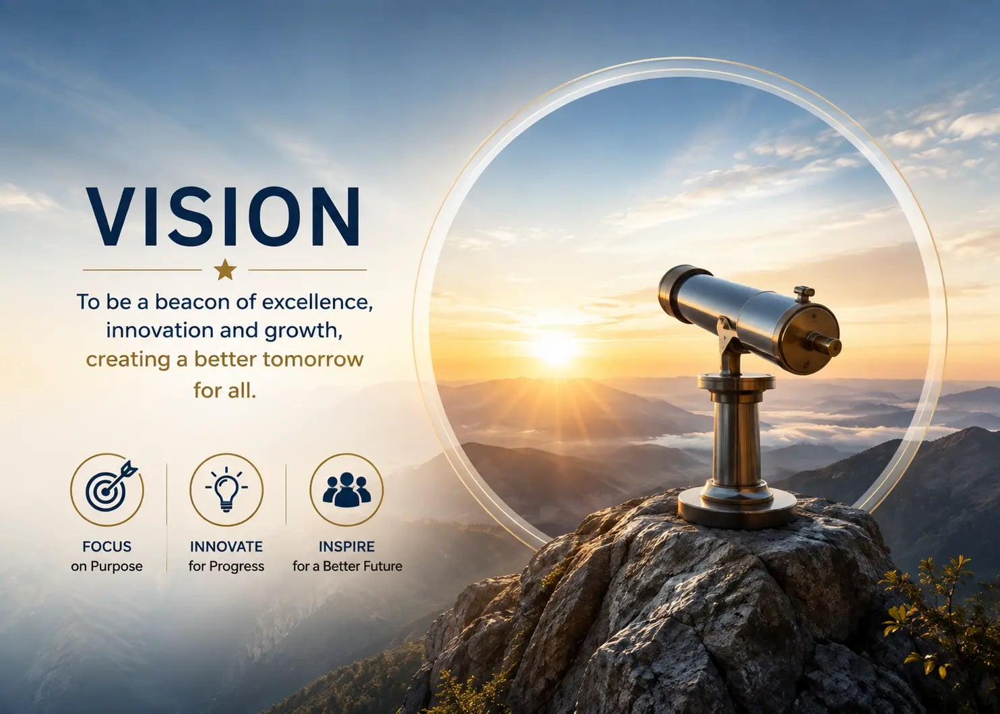
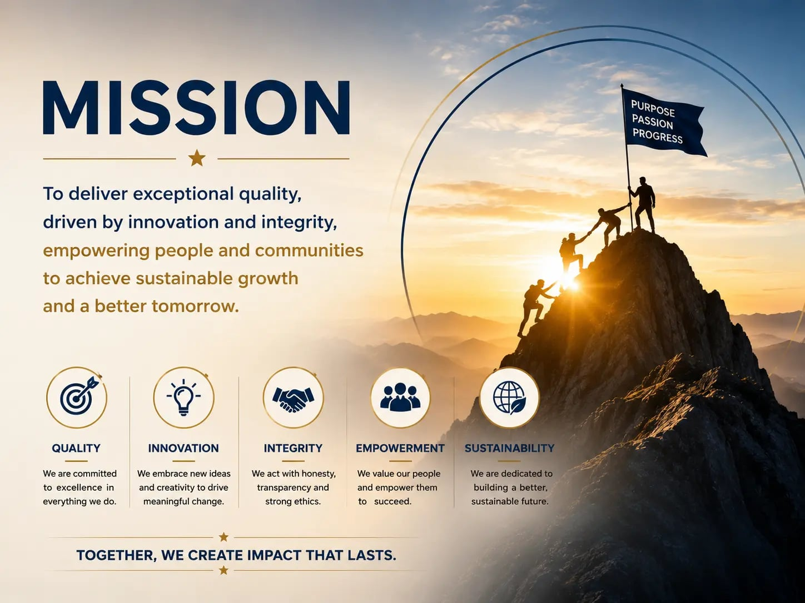

Quality First
We maintain a strong focus on quality across planning, design, construction, and delivery.
Vishnu Developers & Infrastructure is a forward-thinking real estate development company committed to creating thoughtfully planned residential, commercial, healthcare, and mixed-use developments that bring together quality, functionality, contemporary design, and comfortable living.
Director & CEO, Vishnu Developers & Infrastructure
B.Com (Ramjas College, Delhi University) · PGDIB (Amity University) · MBA · LLB (C.C.S. University, Meerut)
Adv. Bhaskar Dutt Sharma brings more than two decades of professional experience in strategy, business development, real estate, residential and commercial sales, customer relationship management, and management consulting.
He has extensive experience in real estate sales, marketing, business development, customer relations, market research, project promotion, and strategic management — including work with residential, commercial, retail, mall, and mixed-use developments, along with responsibilities involving sales strategy, business development, customer satisfaction, market research, project promotion, and collaboration with architects and designers.
At Vishnu Developers & Infrastructure, he provides strategic direction for project planning, sales strategy, channel management and customer relations.

To create an experience of luxury, comfort, and quality living by transforming aspirations into thoughtfully designed spaces, while creating lasting value and a sense of pride for our residents and investors.
Vision without action remains a dream. Purposeful action transforms vision into progress.
Our mission is to create high-quality, thoughtfully planned, innovative, and future-ready developments while maintaining a strong commitment to customer satisfaction, responsible development, quality execution, and lasting relationships.
We strive to combine contemporary design, practical functionality, professional expertise, and responsible development practices to create spaces that people are proud to call their own.

We maintain a strong focus on quality across planning, design, construction, and delivery.
Our developments are planned around functionality, comfort, accessibility, infrastructure, and the needs of the people who use them.
We value transparency, communication, and customer satisfaction throughout the property journey.
We embrace contemporary architectural planning and evolving technologies to create relevant and future-ready spaces.
We aim to create developments that provide lasting value to customers while contributing positively to the surrounding community.
Explore a residential development shaped by secure living, functional planning and enduring values.